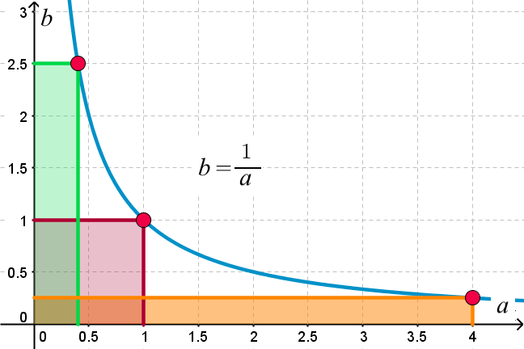

Week 3: applying Bayes
Lecture 3.2: Bayesian lightness

a general problem-level analysis of perception

Computational problems / challenges:
- high dimensionality of the data
- underdetermination of the solution by the data
- the ever-present uncertainty in measurement (due to noise and
incomplete or lost information)
A common solution:
the problem of attaining perceptual CONSTANCY

All perceptual problems share the same computational structure,
illustrated on the right.
What is "intrinsic" (relevant) and what is "extrinsic" (irrelevant)
depends on the task.
CONSTANCY requires that irrelevant variation be ignored/suppressed.
the need for constancy in the face of DIMENSIONALITY
|
 |
a multidimensional chicken:
how to boil it
down to bare essentials |
a multidimensional illumination space:
how
to prevent the brain from exploding |
constancy in the face of dimensionality: a solution
|
|
| a multidimensional chicken |
a multidimensional illumination space |
Solution:
assume that the world is statistically well-behaved
—
- a few dimensions suffice to distinguish between chickens and
ducks, or between horses and donkeys;
- a few dimensions suffice to characterize illumination provided by
real-world light sources.
lightness constancy in the face of INDETERMINACY

The solution to the lightness problem is underdetermined by the
data: there are twice as many unknown as there are data points.
What can be done here?
lightness constancy in the face of indeterminacy: a [class of] solution[s]
The solution to the lightness problem is underdetermined by the
data: there are twice as many unknown as there are data points.
The way out: assume that the world is statistically well-behaved
—
- illumination usually varies gradually over the scene;
- surface lightness (reflectance) is usually piecewise constant over the
scene, with occasional abrupt or stepwise changes.
when assumptions do not hold, perception fails, which may result in illusions
The breakdown of lightness constancy in this image is known as
the Cornsweet illusion.
a failure of lightness constancy, explained

The breakdown of lightness constancy in this image is known as
the Cornsweet illusion.
The illusion happens because the assumptions — that illumination
changes gradually and that reflectance changes stepwise — do not
hold for this image, whose intensity profile (shown on the left)
has been engineered so as to violate them.
lightness constancy: a Bayesian perspective
These assumptions can be cast as Bayesian priors (as explained
on slides 19—24).
First, however, I will outline an example of a generic Bayesian
approach to THE COMPUTATIONAL PROBLEM that is at the core of
lightness estimation:
How to find two unknown numbers from their product.
a very simple example: Bayesian untangling of a product of two
unknowns (Brainard & Freeman, 1997)

The rendering equation \(I = E * R\)
is
bilinear. This means that the relation between
\(I\) and \(E\) is linear when \(R\) is
held fixed and that the relation between \(I\) and
\(R\) is linear when \(E\) is held fixed.
The computational problem is finding two unknown numbers from
their product. Suppose that we observe a number \(y\) and are
told that it is the product of two other numbers, \(y = ab\). The
problem is to estimate the two numbers \(a\) and \(b\).
This problem is clearly UNDERDETERMINED. Let us say
that the observation is \(y = 1\) and that we know that
\(0 \le a, b \le 4\). From the constraint \(ab = 1\) we can say
only that the solution must lie on the hyperbola
plotted here.
A Bayesian analysis can yield more.
Bayesian untangling of a product of two unknowns
Let's find the posterior \(p(\textbf{x}\mid\textbf{y})\) of
\(\textbf{x} = (a,b)^T\) given the observation \(\textbf{y}=y\). With the
rendering equation \(\textbf{y}=ab\) and normally
distributed observation noise with mean \(0\)
and variance \(\sigma^2\), the likelihood is
$$
p(\textbf{y}\mid\textbf{x}) = \frac{1}{\sqrt{2\pi\sigma^2}} e^{-
\frac{\left\vert\textbf{y} - ab\right\vert^2}{2\sigma^2}}
$$
[The above merely states that the noise, which is the difference between
the true value of the product \(ab\) and the measured value \(y\), is normally distributed.]
Assuming (i) that the prior is uniform, \(p(\textbf{x})=1/16\) over the range
\([0, 4]\times[0, 4]\) and \(0\) elsewhere; (ii) that \(y=1\); and
(iii) that \(\sigma^2=0.18\), the Bayes rule
yields this posterior (plotted on the right):
$$
p(\textbf{x}\mid\textbf{y}) =
\begin{cases}
Ce^{-\frac{\left\vert 1-ab\right\vert^2}{2\cdot 0.18}}, & \mbox{if}\ 0 \le a,b \le 4 \\
0, & \mbox{otherwise}
\end{cases}
$$
Bayesian untangling of a product of two unknowns
From the previous slide, the posterior \(p(\textbf{x}\mid\textbf{y})\) of
\(\textbf{x} = (a,b)^T\) given the observation \(\textbf{y}=1\) is:
$$
p(\textbf{x}\mid\textbf{y}) =
\begin{cases}
Ce^{-\frac{\left\vert 1-ab\right\vert^2}{2\cdot 0.18}}, & \mbox{if}\ 0 \le a,b \le 4 \\
0, & \mbox{otherwise}
\end{cases}
$$
This posterior distribution is plotted in the figure on the previous
slide. The set of points with highest probability forms a ridge along the hyperbola
whose equation is
\(ab=1\).
While the ridge has equal height everywhere, it is wider near
\((1, 1)\) than at other points.
Bayesian untangling of a product of two unknowns
While the ridge has equal height everywhere, it is wider near
\((1, 1)\) than at other points.
This property of the posterior distribution — in the present case —
points at a possibility for resolving the problem of
indeterminacy. Can you see how?
Bayesian untangling of a product of two unknowns
The posterior probability distribution provides a COMPLETE
description of what we know, given the data and the
prior.
In a typical estimation problem, however, the goal
is to choose ONE best estimate of the scene parameters, \(\tilde{\textbf{x}} =
(\tilde{a}, \tilde{b})^T\).
In practice, MAP and MMSE loss functions are almost universally used; Brainard &
Freeman (1997) discuss also a third one, MLM:
-
MAP, or maximum a posteriori — choose scene parameter
values that maximize the posterior distribution (closely related to
maximum likelihood methods).
-
MMSE, or minimum mean-squared-error — choose values corresponding
to the mean of the posterior distribution.
-
MLM, or maximum local mass — choose values that maximize the
probability mass in the vicinity of the solution.
Bayesian untangling of a product of two unknowns: MAP
The maximum a posteriori (MAP) loss function stipulates that even small
estimation errors are as bad as large ones.
NOTE that under the MAP loss function in this case there is NO
UNIQUE point of minimum loss. The smallest value of loss is obtained
for the entire set of points along the (constant-height) "summit" of
the ridge.
The MAP loss function is
$$
L(\tilde{\textbf{x}},\textbf{x}) =
-\delta(\tilde{\textbf{x}}-\textbf{x})
$$
Since convolving the posterior with the Dirac
\(\delta\) function leaves the
relative shape of the posterior unchanged, the estimate that maximizes the
posterior also minimizes the corresponding expected loss.
Bayesian untangling of a product of two unknowns: MMSE
The minimum mean squared error (MMSE) loss function stipulates a loss that
accelerates with the magnitude of the estimation error.
Now there is a single optimal solution!
The MMSE loss function is:
$$
L(\tilde{\textbf{x}},\textbf{x}) =
\|\tilde{\textbf{x}}-\textbf{x}\|^2
$$
Bayesian untangling of a product of two unknowns: MLM
The loss function for the maximum local mass (MLM) estimate rewards
approximately correct estimates and penalizes grossly incorrect ones.
For this loss function too, there is a single optimal solution!
The MLM loss function is:
$$
L(\tilde{\textbf{x}},\textbf{x}) =
-exp\left[-\left\|\left(\tilde{\textbf{x}}-\textbf{x}\right)^T \textbf{K}_L^{-1}
\left(\tilde{\textbf{x}}-\textbf{x}\right)\right\|^2\right]
$$
where the matrix \(\textbf{K}_L\) must have sufficiently small eigenvalues.
FINALLY: a Bayesian formulation of the lightness problem (Brainard & Freeman, 1997)
Given: a surface consisting of \(j\) patches, each with a different
lightness (reflectance) function.
\(\textbf{s}_j\) — how much the surface reflects
(a column vector representing the
reflectance function of the \(j\)-th surface patch; the entries specify
the fraction of incident light reflected in \(N_l\) evenly
spaced wavelength bands throughout the visible spectrum).
\(\textbf{e}\) — how much light falls onto the surface
(a
column vector representing the illuminant spectral power
distribution; its entries specify the radiant power in each of the \(N_l\)
wavelength bands).
How much light gets to the eye/camera —
(the \(N_l\) samples of the spectral power distribution of
the light reaching the imaging device from the \(j\)-th surface patch):
$$
\textbf{c}_j = \textbf{e} .\!* \textbf{s}_j
$$
[The \(.\!*\) notation means "multiply the two vectors elementwise."]
Bayesian lightness (cont.)
[From the previous slide] How much light gets to the eye/camera —
$$
\textbf{c}_j = \textbf{e} .\!* \textbf{s}_j
$$
The eye/camera samples each patch \(\textbf{c}_j\) with
\(N_r\) classes of linear photosensors, each characterized
by a spectral sensitivity function (think of the rods and the three types
of cones in the human eye). These are specified by an
\(N_r \times N_l\) matrix \(\textbf{R}\). The
\((p,q)\)'th element of \(\textbf{R}\) specifies the sensitivity of the
\(p\)'th sensor class to light in the \(q\)'th wavelength band.
Let the \(N_r\)-dimensional column vector
\(\textbf{r}_j\) represent the responses of all
\(N_r\) sensor classes to the spectrum sample
\(\textbf{c}_j\). This is obtained via the
rendering equation, which, for the \(j\)'th surface patch, is:
$$
\textbf{r}_j = \textbf{R}\textbf{c}_j = \textbf{R}\left(\textbf{e} .\!*
\textbf{s}_j\right)
$$
These are the measurements that the eye/camera makes available.
COLOR CONSTANCY is the problem of estimating \(\textbf{e}\) and the
\(\textbf{s}_j\) from the ensemble of sensor responses
\(\textbf{r}_j\).
Bayesian lightness (cont.)
[From the previous slide] The measurements that the eye/camera makes available:
$$
\textbf{r}_j = \textbf{R}\textbf{c}_j = \textbf{R}\left(\textbf{e} .\!*
\textbf{s}_j\right)
$$
COLOR CONSTANCY is the problem of estimating the illumination vector
\(\textbf{e}\) and the surface reflectance vectors \(\textbf{s}_j\) from
the ensemble of sensor responses \(\textbf{r}_j\).
The above equation describes the "forward" process of image
formation (a.k.a. rendering) and
measurement. The "inverse" problem associated with it is difficult for two
reasons:
- It is UNDERDETERMINED — there are more scene parameters than there
are degrees of freedom (independent measurements) in the data.
-
It is NONLINEAR — some unknown scene parameters multiply others.
Bayesian lightness (cont.)
The Bayesian framework provides a prescription for how
to use ALL OF THE INFORMATION about the illuminant and the surface, contained
in the sensor responses \(\textbf{r}_j\).
Three probability distributions play key roles:
-
The prior probability — what is known about the parameters before
observing the data. If we need to estimate \(\textbf{x}\), then the
prior is the probability density \(p(\textbf{x})\).
-
The posterior probability — what is known after observing the data.
-
The likelihood \(p(\textbf{y}\mid\textbf{x})\) — the relation between
the data \(\textbf{y}\) (here, the sensor responses \(\textbf{r}_j\))
and the unknown parameters \(\textbf{x}\) (here, the illumination and
the reflectance \(\textbf{e},\textbf{s}_j\)).
NOTE: The likelihood may be thought
of as the rendering equation expressed as a probability distribution
\(p(\textbf{r}_j \mid \textbf{e},\textbf{s}_j)\); compare this
with the process of rendering a wireframe object, illustrated on
slide 13 of Lecture 3.1, on the right.
[nothing new here, just a restatement of the Bayes formula]
The Bayesian framework provides a prescription for how
to use ALL OF THE INFORMATION about the illuminant and the surface, contained
in the sensor responses \(\textbf{r}_j\).
Given the prior \(p(\textbf{x})\) and the likelihood
\(p(\textbf{y}\mid\textbf{x})\), the posterior
probability \(p(\textbf{x}\mid\textbf{y})\) is computed by using the Bayes
rule:
$$
p(\textbf{x}\mid\textbf{y}) = \frac{p(\textbf{y}\mid\textbf{x})
p(\textbf{x})}{p(\textbf{y})} = C\cdot p(\textbf{y}\mid\textbf{x})p(\textbf{x})
$$
where \(C = \frac{1}{p(\textbf{y})}\) is a normalizing constant that depends on the data \(\textbf{y}\) but
not on the as yet unknown parameters \(\textbf{x}\).
[nothing new here, just invoking the loss function
To use the posterior distribution to estimate a unique value \(\tilde{\textbf{x}}\) for the
parameters \(\textbf{x}\), we need to specify a loss function \(L\left(\tilde{\textbf{x}},\textbf{x}\right)\). This function
specifies the penalty for choosing \(\tilde{\textbf{x}}\) when the actual parameters are
\(\textbf{x}\). Given the posterior and a loss function, we may compute the loss
expected in choosing \(\tilde{\textbf{x}}\), called the Bayesian expected loss:
$$
\bar{L}\left(\tilde{\textbf{x}}\mid\textbf{y}\right) =
\int_{\textbf{x}} L\left(\tilde{\textbf{x}},\textbf{x}\right)
p\left(\textbf{x}\mid \textbf{y}\right) d\textbf{x}
$$
[Remember the advice from week 1
regarding the \(\int\) notation.]
The value of \(\tilde{\textbf{x}}\) is chosen to minimize the expected loss.
Often the loss function is shift-invariant, so that the loss depends only
on the difference \(\tilde{\textbf{x}} - \textbf{x}\).
Example: a "zero-tolerance" loss function: zero penalty for
\(\tilde{\textbf{x}} - \textbf{x} = 0\) and infinite penalty for
\(\tilde{\textbf{x}} - \textbf{x} \neq 0\)
Bayesian estimation provides a principled way to choose an optimal
estimate that uses all of the information contained in the data.
Bayesian approach to lightness: a summary
The Bayesian approach has three explicit components:
-
To calculate the likelihood, we must model image formation (which is
what the rendering equation does).
-
To specify the prior, we must quantify our assumptions
about images.
-
And to minimize the expected loss, we must state the cost of estimation
errors.
Within the Bayesian framework, each of these components may be
considered separately: We need not confound our assumptions
about the world (the prior) with how we will
use our estimate (the loss function).
(For the actual algorithm and a description of its
performance, see the optional sections 3 and 4 of the Brainard &
Wandell paper.)